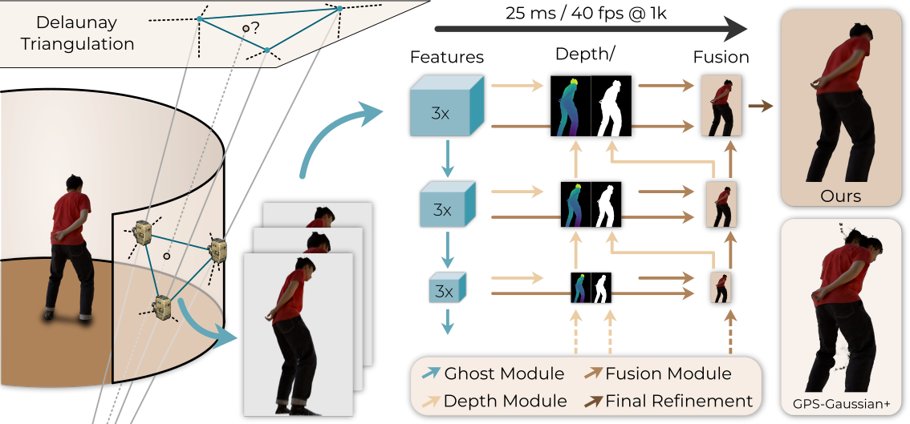

3DTV: A Feedforward Interpolation Network for Real-Time View Synthesis
University of Bonn

We present 3DTV, a real-time method for novel view synthesis from sparse cameras.
It combines geometric view selection via Delaunay triangulation (left) with depth-guided feedforward synthesis and coarse-to-fine refinement (center), enabling novel views from only three input cameras at 40 FPS (1k resolution) without per-scene retraining.
Compared to recent sparse-view synthesis methods such as GPS-Gaussian+, our approach is more stable and reduces artifacts (right).